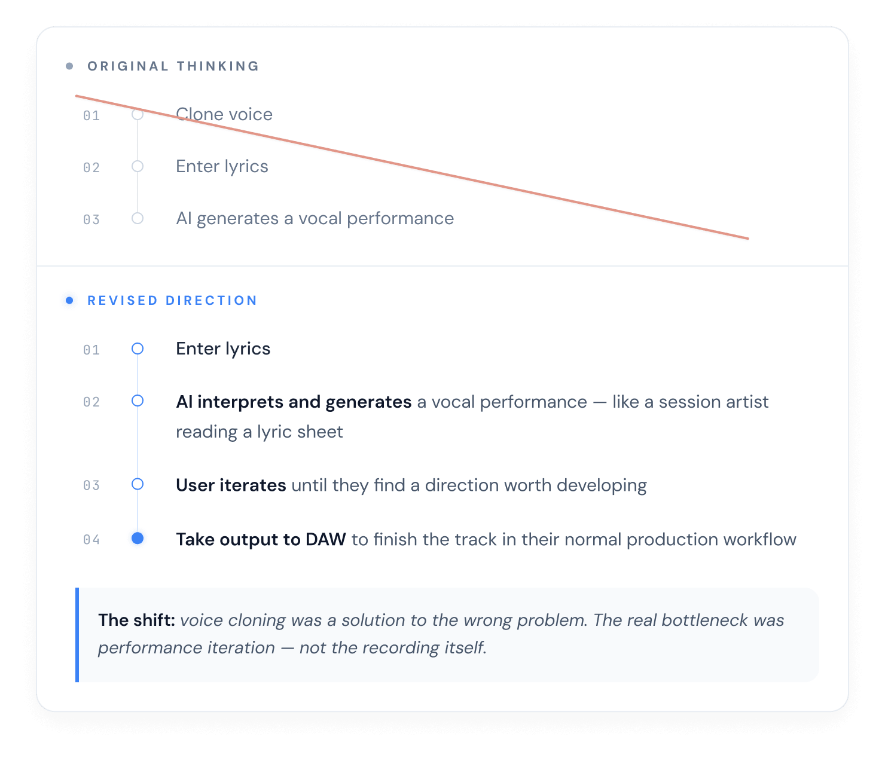

One real problem.
One shipped product.

HEARD — A lyric-first music tool that turns written words into produced demo tracks using AI. Built by a lyricist who had the same problem for all lyricists.
One builder. With AI as a collaborator, every discipline — research, design, engineering — moved faster and reached further because of it.
Designers can ship. The designer who understands the problem deeply and can direct AI precisely can now own the full product — from insight to working software.
How can a lyricist now hear their words without a studio, a producer, or weeks of effort?
Classic Double Diamond.
Accelerated with AI.

A North Star
My initial idea was simple: clone my voice, feed it my lyrics, and have AI generate a complete song. The scope was intentionally narrow. The goal was to find out whether this was even possible and, if so, can I build it.
Two reasons drove me forward. I'm a lyricist with years of written work I'd never heard produced. And I'd been asking whether a designer with the right experience could ship a real product alone, using AI as the implementation layer. That was the brief. Not a requirements doc — a North Star.

Refining the Idea
Working prototypes with real code are the new wireframes.Before any design work started, I tested three voice cloning APIs, UberDuck, Kits.ai, and ElevenLabs, building functional prototypes at each step to pressure-test the concept against reality.
Three things came out of the PoC that shaped everything downstream.
- The technology pivot: diffusion models — trained on actual songs rather than spoken dialogue — produced performances that felt musical because they were shaped by music. I rebuilt the prototype around Suno via the Kie AI service and the difference was immediate.
- The product reframe: I didn't need a voice cloning tool. I needed an AI session artist — something that could interpret my lyrics, generate multiple performances, and give me a reference point to iterate from. Voice cloning was a solution to the wrong problem.
- A new research method I'd use again in the design phase: role-separated AI interviews, where the distance between researcher and subject is the mechanism that makes honest findings possible.
The PoC didn't validate the idea. It replaced it with a better one.
Workflow refinement based on AI assisted self-interview

PoC output evolution
Three APIs, One Lesson
I tested three voice cloning APIs to find out if the concept was buildable at all. UberDuck revealed a fatal UX problem early: the API required ten minutes of voice samples versus thirty seconds in the web interface. That asymmetry would have broken onboarding.
ElevenLabs was the breakthrough — until I listened back. The clone was accurate. It actually sounded like me. But text-to-speech models and rap performance are fundamentally incompatible. The rhythm was flat, the delivery mechanical, the energy gone.
The prototype worked technically. The output failed artistically. That distinction mattered.
The Self-Interview I Couldn't Have Conducted Alone
If I wrote the interview questions and then answered them, my researcher brain and my user brain would contaminate each other. Instead, I gave my AI assistant the role of UX researcher — a workaround for the principle that you are not the user. The AI asked the questions; I answered honestly, without anticipating where the answers would lead.
The finding: the biggest pain point in my music-making process wasn't recording — it was the iteration required to get there. Days figuring out how lyrics should flow against a beat. Where do I breathe? Which lines need to slow down? That's where I lost the most time — and what I'd been trying to solve without naming it clearly.
I didn't need a voice cloning tool. I needed an AI session artist — something that could interpret my lyrics, generate multiple performances, and give me a starting point I could iterate on. The voice cloning aspect was a solution to the wrong problem.
"I didn't need a voice cloning tool. I needed an AI session artist."
Key finding from AI-assisted self-interview
From Speech Engine to Music Engine
Text-to-speech models understand emotional pacing but have no concept of bars, beat structure, or musical timing. The better-performing tools I found were built on something different: diffusion models trained on actual songs. They understand the relationship between a lyric and a beat. They produce performances that feel musical because they were shaped by music.
I rebuilt the prototype around Suno via the Kie AI service and the difference was immediate.
The POC answered the only question that mattered at that stage: yes, this could be built. The design phase is where everything else got decided — what the product would be called, what it would look like, and what it would feel like to use.
Naming — HEARD
What it felt like to hear my lyrics performed as a full track for the first time was a key input in the naming process. That moment — the surprise of it, the emotional weight of finally hearing what had only existed on paper — needed to be in the name.
I started with "Herd" — an intentional alternate spelling, and the acronym landed well. But days later the word's other meaning surfaced: cattle, crowds, following. Wrong connotations for a product about individual creative expression. One letter changed everything.
Usability — The Genre Literacy Problem
I ran an AI-assisted usability study on the second prototype. The most significant finding: the prototype listed 16 genres in a dropdown. For a new user, those labels meant almost nothing in terms of predicting what the final output would actually sound like.
If users can't predict the output, they can't make good decisions. If they can't make good decisions, they waste credits and lose trust in the tool. The fix was organizing the genre library into subcategories — reducing overwhelm and giving users enough context to choose with confidence.
AI Design Critique
As a solo builder, I didn't have a design team to review my work before it shipped. So I built the equivalent: gave my AI assistant the full project context — brand guidelines, research findings, goals — and used it to evaluate the work objectively. The distance enables honesty.
"Your primary CTA is nearly invisible. 'Make Your Voice HEARD' reads more like a tagline than a button. If sign-up is the goal, the CTA language needs to say that — right now a visitor doesn't know what clicking it gets them."
AI Design Critique — Homepage Review
The Decision — Fidelity vs. Velocity
Voice cloning was technically within reach and emotionally compelling — the kind of feature that makes a demo unforgettable. It was also a 6-month engineering detour with unresolved legal exposure.
Generating songs in an artist's own voice. Technically possible, legally uncertain, and 6 months away from the core problem worth solving.
One clear problem, solved well. Give me a song from a lyric or concept, fast. No production knowledge required. Real users, real output, real value.
Scope control is a design skill.
The Invite-Only Decision
Building the signup flow pushed me into product strategy in a way the earlier design work hadn't. I couldn't maintain an open-access product alone. But I needed real users to learn what actually needed improving — and I wanted them to feel like they were joining something, not just creating another account.
Personal request form, a 7-day review window, a unique invite link by email. Users choose Google, Spotify, or email. They land on a welcome screen that orients them to the 3-step flow before they touch anything. Every state — authenticated, unauthenticated, expired invite, returning user — had to be designed and built.
"Neither of us could have built it alone. That's what AI-era design leadership looks like."
The division of labor was clear: I specified what should happen in each scenario — product behavior, edge cases, user states — and the AI figured out the technical implementation. I reviewed the output, flagged what wasn't right, and fed that back in.
Knowing what should happen in a product is a design skill, not a technical one. The AI made suggestions; I surfaced scenarios it hadn't anticipated. That loop — instruct, build, refine — is what got the app to completeness. The instruct step required the most judgment.
Eight hours of focused production work used to stand between a finished lyric and a produced demo. Now I paste the lyrics and press generate. Three minutes later, I have two versions to choose from. That's what HEARD does.
Every tool required judgment at every step. Output quality was entirely dependent on the inputs — and those inputs came from 18 years of design experience.
AI-assisted self-interview and usability study weren't substitutes for real user research — they were genuine methods that put the builder in the mindset of the user.
Depth of understanding is the competitive advantage. A designer who can direct AI precisely can now close the gap between insight and shipped product — alone.
Anyone can generate a lyrics-to-music tool right now. What can't be generated: branding that feels genuine, made by someone who understands the problem intimately.
AI expands what's possible. That makes scope discipline more important, not less. Knowing what to leave out — and being honest about why — is product maturity, not limitation.
Total build time across research, design, engineering, and deployment — solo.
Deployed and accessible. Real users, real feedback, real iteration.
Early access users actively using the platform and shaping v2.
The product is live. If you write music and want to hear what you've been missing, try it.
Try HEARD →If you're building a team that wants design leadership ready for what's next, let's talk.
Get in touch →